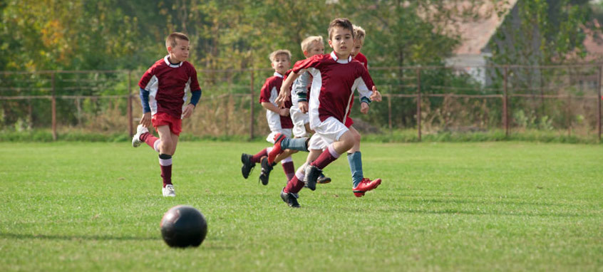

Northside Youth Soccer League
About NYSL
About NYSL
To support young athletes living in Chicago's northside neighborhoods, who have an interest in learning and playing soccer, with opportunities to learn and practice skills related to the game of soccer, especially those skills related to team cooperation and good sportsmanship.
The Northside Youth Soccer League aspires to develop strong, well-rounded, and mindful athletes through the building of character, self-discipline, and leadership.
The Northside Youth Soccer League was established in 1996 to provide athletes residing in Chicago's northside neighborhood an environment to learn and play soccer. To be a member of NYSL, you must be between the ages of 4-12 and reside in a Chicago northside neighborhood. NYSL is run by a small, full-time staff, and relies on the generous volunteer time of parents and former league members.